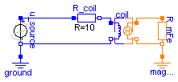

| Name | Description |
|---|---|
| SaturatedInductor | Inductor with saturation in the ferromagnetic core |
| ElectrodynamicActuator | Two translatory electrodynamic actuator models of different modelling depth and their usage |
| ElectromagneticActuator | Two models of a reluctance actuator of different modelling depth and their comparison and usage |

This model demonstrates the effects of non-linear magnetisation characteristics of soft magnetic materials (hysteresis neglected). A sinusoidal voltage is applied to an inductor with a closed ferromagnetic core of rectangular shape. Set the tolerance to 1e-7, simulate for 0.1 s and plot for example:
coil.i vs. time // non-harmonic current due to saturation of the core material
R_mFe.my_r vs. R_mFe.B // relative permeability vs. flux density inside core
R_mFe.B vs. H_fe // magnetisation curve B(H); hysteresis neglected
The magnetisation characteristics of the flux tube element representing the ferromagnetic core can easily be changed from simplified linear behaviour (nonLinearPermeability set to false and R_mFe.my_rConst set to a positive value, preferably my_rConst >> 1) to non-linear behaviour (e.g. selection of one of the electric sheets in Material.SoftMagnetic with nonLinearPermeability set to true). This enables for convenient inital design of magnetic circuits with linear material characteristics prior to simulation with non-linear behaviour.
N.B.:
If the supply voltage has a zero-crossing when applied to the inductor at time t=0 (i.e. u_source.phase set to zero instead of pi/2), then the inrush current that is typical for switching of inductive loads can be observed.
model SaturatedInductor
"Inductor with saturation in the ferromagnetic core"
SI.MagneticFieldStrength H_fe
"Magnetic field strength inside core for plot of characteristics B(H)";
Sources.ElectroMagneticConverter coil(w=1000, c_coupl=0.85) "Inductor coil";
MagneticGround magGround;
Modelica_Magnetic.FluxTube.FixedShape.Cuboid R_mFe(
l=4*0.1,
a=0.04,
b=0.04,
redeclare record Material =
Modelica_Magnetic.Material.SoftMagnetic.ElectricSheet.M350_50A)
"Reluctance of ferromagnetic inductor core";
Modelica.Electrical.Analog.Basic.Ground ground;
Modelica.Electrical.Analog.Basic.Resistor R_coil(R=10)
"Inductor coil's resistance";
Modelica.Electrical.Analog.Sources.SineVoltage u_source(
freqHz=50,
V=1000,
phase=pi/2) "Voltage applied to inductor";
equation
connect(coil.p_mag, R_mFe.p);
connect(coil.n_mag, magGround.p);
connect(u_source.p, R_coil.p);
connect(R_coil.n, coil.p_el);
connect(coil.n_el, u_source.n);
connect(u_source.n, ground.p);
connect(magGround.p, R_mFe.n);
H_fe = R_mFe.B/(my_0 * R_mFe.my_r);
end SaturatedInductor;